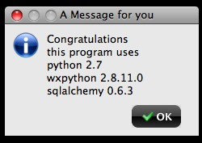

Brief guide to using virtualenv in a wxpython project¶
Goal¶
Here you will find a brief guide to use virtualenv with your wxpython project in Mac OS X.
Virtualenv has been used in the python community mostly for web projects. The idea of python isolation in virtualenv is great, but applying that to GUI development is not easy, specially when Mac OS X is your development platform.
Python 2.7 has been released and has a lot of nice features, so we are going to use it with virtualenv module and wxpython 2.8.11 in OS X ( Tiger, Leopard or Snow Leopard ).
Note
wxpython 2.8.11 doesn’t work with OS X Panther ( at least the combination with python2.7 ).

One time installation¶
Let’s do first of all the base installation of:
- python 2.7 ( 32 bit ).
- wxpython 2.8.11
- distribute ( setuptools replacement ).
- pip
- virtualenv
Download and install python2.7 from python’s web site at www.python.org/download/releases/2.7/
The file that you have to download is 32-bit Mac Installer disk image ( 2.7 ) for OS X 10.3 and later.
Note
Mac OS X Leopard and Snow Leopard have python2.6 installed by default. The Snow Leopard python version included is compiled in 64 bit. WxPython is compiled for 32 bit universal python, so we need to install the 32 bit version of python 2.7.
Another way to install python 2.7 is by opening Terminal.app or iTerm.app
Change your path to where you want to download the file using the cd command.
Note
If you use iTerm ( as I do ), use the finder to locate the place where you want your downloads to be placed and drag the folder to the iTerm icon. This will start iTerm or spawn a new iTerm window with your selected folder as the starting point.
If you have curl installed download the file typing...:
$ curl -O http://www.python.org/ftp/python/2.7/python-2.7-macosx10.3.dmg
Mount the dmg file by typing...:
$ open python-2.7-macosx10.3.dmg
Double click on the package to install it and follow the instructions.
Download and install the wxpython module available from www.wxpython.org/download.php#binaries.
Look for the link osx-unicode in the column Python2.7 of the table OS X Binaries.
Alternatively you can download the wxpython module with curl.:
$ curl -O http://downloads.sourceforge.net/wxpython/wxPython2.8-osx-unicode-2.8.11.0-universal-py2.7.dmg
Mount the dmg file by typing...:
$ open wxPython2.8-osx-unicode-2.8.11.0-universal-py2.7.dmg
Click on the package to install wxpython following the instructions.
Install distribute.
Download the tar.gz file from pypi.python.org ( search for distribute a find the link a the bottom of the page ).:
$ curl -O http://pypi.python.org/packages/source/d/distribute/distribute-0.6.14.tar.gz
$ tar zxf distribute-0.6.14.tar.gz
$ cd distribute-0.6.14
$ sudo /Library/Frameworks/Python.framework/Versions/2.7/bin/python2.7 setup.py install
Install pip in python 2.7:
$ sudo /Library/Frameworks/Python.framework/Versions/2.7/bin/easy_install pip
Install virtualenv in python 2.7:
$ sudo /Library/Frameworks/Python.framework/Versions/2.7/bin/pip install virtualenv
Create a virtualenv environment¶
$ /Library/Frameworks/Python.framework/Versions/2.7/bin/virtualenv --distribute --no-site-packages myenvfor27
$ cd myenvfor27
$ source bin/activate
Hack your environment¶
$ cd $VIRTUAL_ENV/lib/python2.7/site-packages
$ ln -s /Library/Frameworks/Python.framework/Versions/2.7/lib/python2.7/site-packages/wxredirect.pth wxredirect.pth
$ cd $VIRTUAL_ENV/bin
$ ln -s /Library/Frameworks/Python.framework/Versions/2.7/bin/pythonw pythonw
Now set the PYTHONPATH variable to your site-packages...:
$ cd $VIRTUAL_ENV
$ echo "export PYTHONPATH=$VIRTUAL_ENV/lib/python2.7/site-packages" > dothis
$ source dothis
Install some modules with pip in your virtual environment¶
Some examples
$ pip install sqlalchemy
$ pip install mako
$ pip install reportlab
$ pip install pyredis
Check your virtulenv modules¶
$ pip freeze
You’ll see the list of all the installed and recognized modules.
Now enter the python interpreter in your virtualenv, but the one used to run wxpython programs ( pythonw ).
>>> import sqlalchemy
>>> sqlalchemy.__version__
If the import was done the you’re done, congratulations!
Exit your interpreter as usual
>>> exit()
In anycase follow the next step to test your environment with a real program.
Test using a real GUI program¶
Copy this script to example.py in your virtual environment:
import wx
import wx.lib.agw.genericmessagedialog as GMD
import sys
try:
import sqlalchemy
except:
pass
def main():
app = wx.PySimpleApp()
try:
version = "{}.{}".format(*list(sys.version_info[:2]))
message = "Congratulations \nthis program uses\npython {}\nwxpython {}\nsqlalchemy {}".format(version , wx.__version__, sqlalchemy.__version__)
except:
message = "Sorry but you forgot to set the PYTHONPATH variable using source dothis"
dlg = GMD.GenericMessageDialog(None, message , "A message for you", wx.OK | ( wx.ICON_INFORMATION + GMD.GMD_USE_GRADIENTBUTTONS ) )
dlg.ShowModal()
dlg.Destroy()
app.MainLoop()
if __name__ == "__main__":
main()
And run the script:
$ pythonw example.py
If everything’s o.k. you are going to see something like this...
